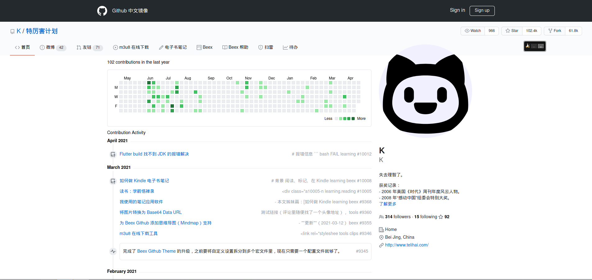

用户评论
我们收集了一些用户的评论


对比hexo与beex，hexo渲染100个以上的页面需要>1s，而beex只需要不到0.5s
对比Hexo与Beex渲染100个页面的大小，Jekyll占5MB，而Beex只占了2.5MB不到
Beex使用Tera模板主题，即使是没有接触过编程的人也可以快速上手
对比hexo与Jekyll初始化和配置需要的冗长的时间和大量的指令，Beex只需要几条指令就可以解决
对beex感到满意
活跃用户
他使用Rust编写以及使用轻量级架构来构建静态html
我们通过用户视角使beex尽可能的简单与便利，让你把精力全部放在写作上